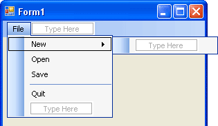
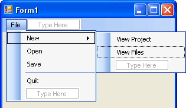
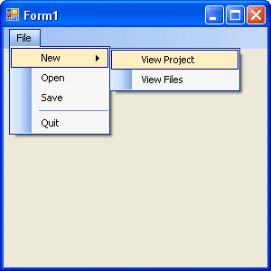

Sub Menus in C# .NET
<< Continues from the previous lesson
You can add Sub Menus just as easily. A Sub menu is one that opens out from a main menu item.
Halt your programme and return to your form. Click on the New item to
select it. You should see a "Type Here" box appear to the right of
New:

Click Inside of this box and type View Project. Hit the enter key and type View Files in the box below this. Your menu will then look like this:

When the form is run, the Sub Menu will look like this:

Sub menus are quite easy to add! In the mext lesson, you'll learn how to add shortcuts to your menu items.